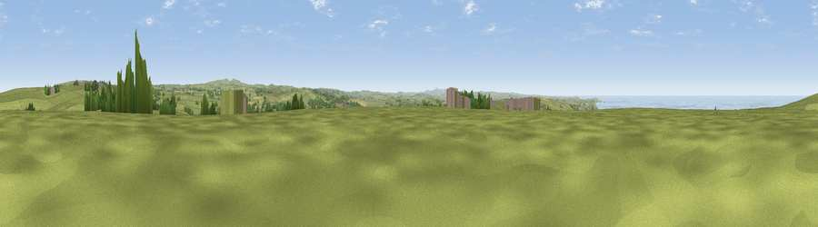

Viewpoint near St Teath
#4736 in England · top 12% of its area beats it · near St Teath · path 213 mWhere it is
The exact computed spot (SX 05500 82338). Click the marker for map links.
Public access: the nearest public right of way is about 213 m away — the final stretch may cross private land. Computed from Natural England's CRoW access layer and OpenStreetMap rights of way — not the legal definitive map. Always verify locally.
The view, rendered

A 360° render of this exact spot computed from the terrain model, tree cover and land cover — summer colours, afternoon light, calibrated against photographs of famous viewpoints. Real trees, hedges and buildings will differ in detail.
The panorama
Grey silhouette: terrain skyline in each direction (720 bearings, Earth curvature and refraction included). Dashed green: skyline with trees (+15 m) and buildings (+8 m) as obstacles. Blue strip: how far the ground is visible on each bearing.
Where the view opens
Wedge length = distance to the farthest visible ground on that bearing (vegetation-aware). Rings at 10, 25 and 50 km.
What fills the view
69% grassland · 15% water · 7% cropland · 7% woodland · 1% built-up
Angular shares of the visible panorama (visual magnitude), not map area. Landscape diversity 0.42 (0–1 Shannon).
Key numbers
More beautiful places nearby
The staircase of upgrades: each row has a higher view potential than everything closer. Driving times are estimates from straight-line distance, calibrated against real road routing — check an actual route before setting out.
| Place | Direction | Drive | Score |
|---|---|---|---|
| Viewpoint near Treligga | WNW · 1 km | ~4 min | 79.3 |
| Viewpoint near Port Isaac | SW · 3 km | ~8 min | 79.7 |
| Viewpoint near Boscastle | NNE · 7 km | ~15 min | 82.0 |
| Viewpoint near Boscastle | NNE · 8 km | ~16 min | 84.3 |
| Viewpoint near Boscastle | NNE · 8 km | ~17 min | 85.2 |
| Viewpoint near Boscastle | NNE · 13 km | ~24 min | 85.8 |
| Viewpoint near Lesnewth | NNE · 13 km | ~24 min | 87.7 |
| Viewpoint near Crackington Haven | NNE · 14 km | ~25 min | 88.1 |
50.60825, -4.75026 · source: screening · position refined by local search. Computed location — check access rights before visiting.